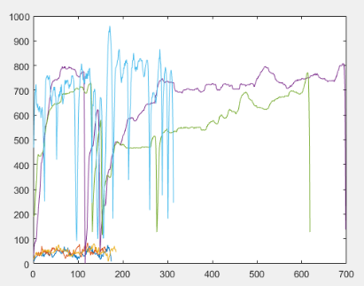
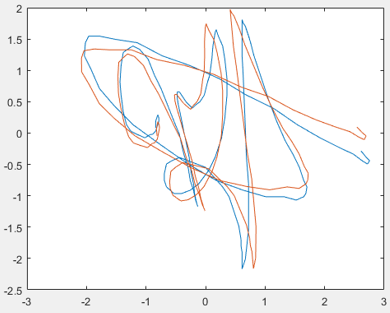
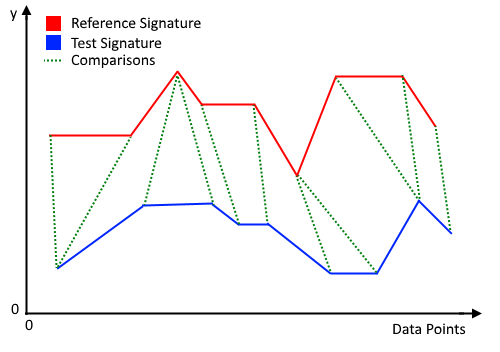
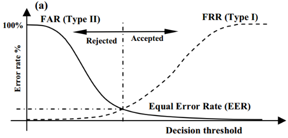
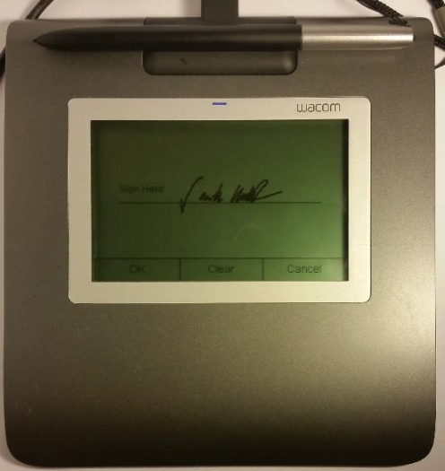

Signature is a type of behavioral biometry. The characteristics of a signature are acquired by the signee overtime. These characteristics are the result of a complex combination of factors, such as the signee’s preferences, routines, and muscle structures. These factors make signatures very difficult to forge. But due to the ever-changing nature of behavioral biometry, it is virtually impossible to produce the exact same signature twice. The 2 signatures above looks very different visually, however, good authentication algorithms are able to realize that they are 2 genuine signatures from the same signer. And not none of the signatures on this page is my signature.
The project was divided into 2 parts:
1. Develop an algorithm to identify forged signature from genuine signatures using a provided database.
2. Program this algorithm into a graphical tablet. Authenticate signatures in real time.
Without looking at the actual data, one can immediately tell that categories such as sex, age, and ticket class are likely to be much better predictors of a passengers survival chance than ticket number and port of embarkation. However, no assumption is made at this stage.
The test for the developed algorism is conducted using the SUSig database. This database is a collection of signatures made available by the Sabanci University, each sample signature includes 10 genuine and 10 highly skilled forgeries.
The authentication process includes 4 steps: Feature Extraction, Data Scaling, Dynamic Time Warp and Threshold Calculation.
The algorithm of this project utilizes 4 categories of data from each signature: x-displacement, y-displacement, continuous time and pressure. Most forgers focus on the geometry of the reference signature but pay little attention to the pressure and timing. The following 2 graphs show how some forgeries can be easily identified using pressure data.
The graph plots the pressure of pen tip recorded during the signature. The top 3 lines are forgeries, showing the forger is holding the pen tighter and applying uneven pressure when compared to the 3 genuine signatures near the bottom of the graph.
This is a relatively simple step. Data extracted is scaled to the same size by normalization, then rotated to around the center of mass. The effect of this step is insignificant in the case of most signatures. But it did have positive effect on some inconsistent reference signatures.
There are 3 major series comparison methods used for applications such as signature authentication, voice comparison, fingerprint authentication, etc. They are Vector Quantization, hidden Markov and Dynamic Time Warp. Our algorithm uses Dynamic Time Warp.
Dynamic Time Warping enables the comparison of signatures regardless of their sizes or number of points of data. The advantage of this is that if a signature holds 20 points of data from one database, it can be compared to another with 30 points of data, meaning that sampling methods should have no impact on the comparison itself. It is for this reason that DTW has been chosen in this project.
The diagram above shows a rough idea of DTW comparing relevant point between 2 signatures. DTW is a rather complex procedure, Jareth and me have spent a large amount of time modifying DTW features and weighting. I will not go into details here.
After comparing the test signature with the reference signatures. An algorithm must determine if the test signature is “similar enough” to be classified as a genuine signature. This threshold of similarity is calculated by comparing all reference signatures against each other, then setting a value based on Normal Distribution of the result.
The two main measures of accuracy used in this project come in the form of False Rejection Ratio (FRR) and False Acceptance Ratio. FRR refers to how many of the compared genuine signatures accidentally get rejected. FAR refers to how many of the compared incorrect signatures are accepted. A third form of measure is the Equal Error Rate (EER). The Equal Error Rate exists where FRR is equal to FAR. Since both cannot be at 0% at the same time, they intersect at the EER
| FRR | FAR |
|---|---|
| 5% | 1.34% |
| 2.5% | 1.38% |
| 1.5% | 1.41% |
These results can be used to find the EER of 1.06%. The lower the equal error rate, the more accurate the system. FAR and FRR will never be able to be zero at the same time and so best system will either improve more on one of the two than the other or reduce EER down to an acceptable level.
The results found in this project are much lower than other industry EERs and must be understood carefully. The system was built mainly around testing the SUSIG database and so carried a fair amount of bias towards it. The results gathered would be best retaken with a test on the tablet interface when a larger database is created.
The algorithm developed in the project is them put to the test using the Wacom STU-430 Signature Pad. The signature pad comes with a development environment. And the user interface was written by Jareth using Java. From the data collected by Jareth and me. Our algorithm is able to authenticate signature with an accuracy of between 90% - 95%. The time taken to process the signatures on a laptop is belowing 10 seconds. Below are some pictures.
